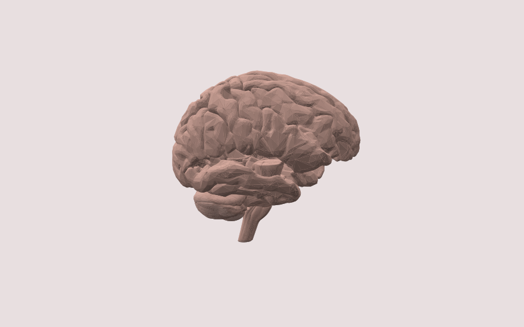

Meet your
beautiful
brain.
A curious little corner for exploring neuroscience, finding your focus and making big ideas feel a bit smaller.
Go at your own pace.
Brain, in 3D ✳

Model preview · Interactive rotation requires WebGL.
BODYPARTS3D
A closer look.
Choose a region to light it up on the model and discover what it helps us do.
The whole picture
Your brain is a wonderfully connected team. Its different regions work together to help you think, feel, move and make sense of the world.
The two cerebral hemispheres communicate with each other through a bundle of fibres called the corpus callosum.
Region groups are approximate and intended for learning. Model: BodyParts3D, © DBCLS, CC BY-SA 2.1 JP.
Build your brain bank.
Pick a card. Learn the essentials. Save the little wins.
Make space to focus.
A little time for the task in front of you. Nothing more.
A little focus time, just for you.
A thought worth keeping.
Jot down a question, a connection or anything you want to come back to.
A tiny quiz.
Big brain energy.
Five friendly questions to see what stuck. No pressure, just practice.